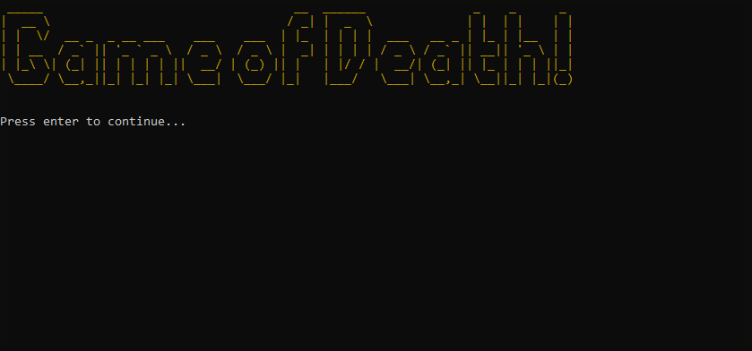
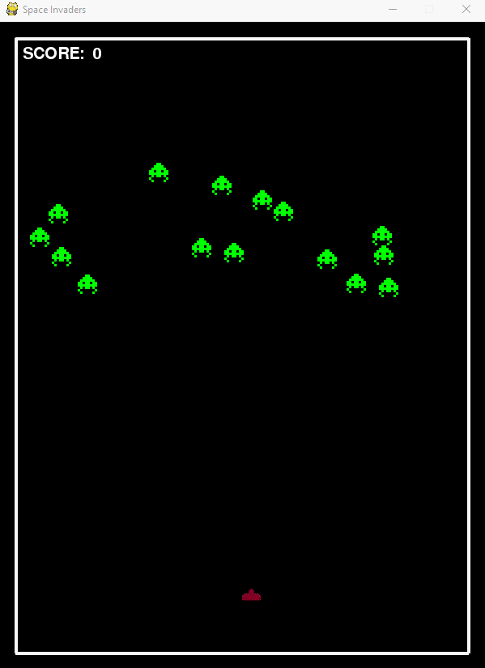

My Projects
These are the tools I am experienced with:
Back in 2003 I graduated from TAFE with a Diploma in I.T - Software Development. I then went on to work at the Environmental Protection Agency for 4 years on their helpdesk and assisted with their roll out of Windows 2000 across all of QLD. I went on to work in Desktop Support as well as Executive Support.
I then went back to university and studied Exercise Science for 4 years with some units of Behavioural Psychology.
Here is a summary of my work/study history:
- 2020: Commenced new I.T career @ Coder Academy, Brisbane
- 2019: Travelled for 6 months (Asia, UK, Europe, USA)
- 2016-2019: Worked in several casual/part-time roles (P.T, admin & customer service roles)
- 2015: Received Cert IV in Training & Assessment
- 2010-2014: Obtained Bachelor's Degree of Exercise Science
- 2006-2010: Worked @ E.P.A (Helpdesk, Desktop Support & Executive Support
- 2005: Obtained A+ Hardware Professional & Microsoft Certified Professional (Excom)
- 2003: Obtained Diploma I.T (Software Dev. TAFE)
Link to my Github
Click here for my resuméSome of my past projects include:
RV (work in progress)
A Unity/C# game about survival in the harsh wilderness, featuring a drivable RV and explorable environments.
Game of Death (Terminal App, Ruby)
A Ruby-based text-based-adventure with multiple user choices and combat!
Hospital Simulation (Unity 3D)
A sims-inspired hospital game utilising Goal-Oriented-Action-Planning (GOAP) within Unity.

Small Town simulation (Unity 3D)
A modification of the hospital sim, I want to simulate a town with workers who eat, sleep, work, and converse, all based on the GOAP principle.

Space Invaders (Python)
A take on the old classic, with randomly-placed enemies, written in Python.
